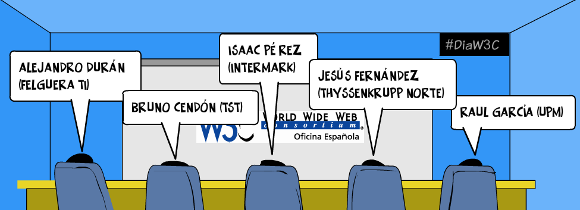
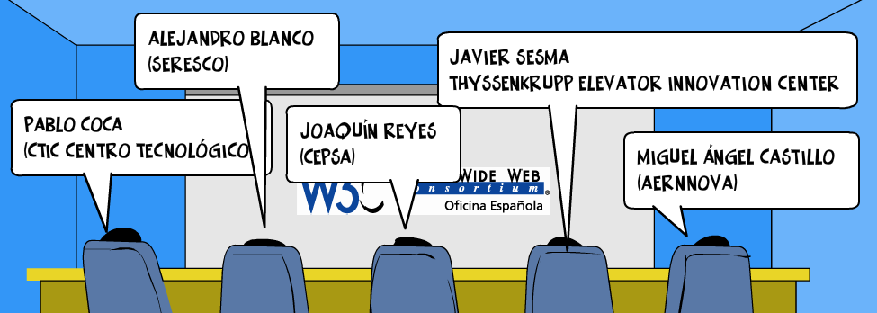
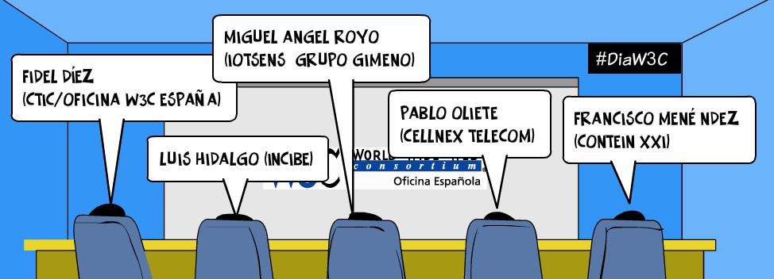
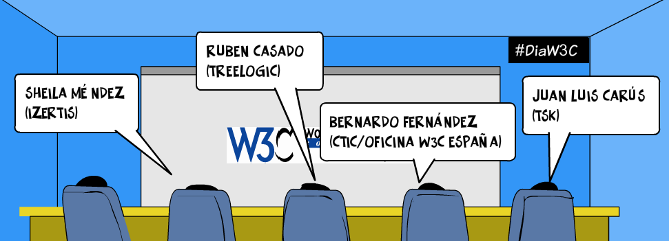
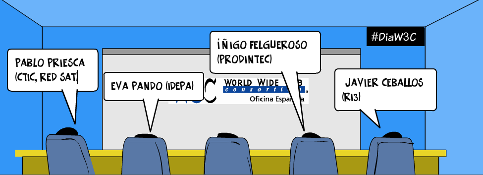

La interoperabilidad en la Industria de las Cosas

La interoperabilidad en la Industria de las Cosas
Los habilitadores digitales en el camino hacia la Industria 4.0

Ciberseguridad en el IoT

Cloud Computing + Data Analytics

Itinerarios de transformación digital hacia la Industria 4.0
